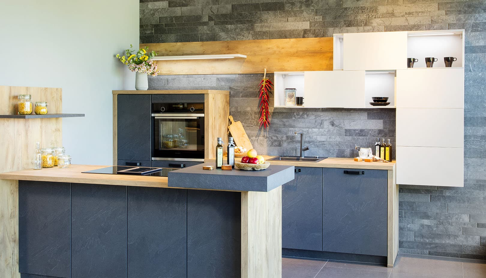

Stylové KUCHYNĚ A KUCHYŇSKÉ LINKY
Inspirujte se u našich designerůNajděte svoji vysněnou kuchyni v jednom z nejoblíbenějších stylů. V SIKO neustále sledujeme nové trendy, abychom naše služby a produkty přizpůsobili vašim potřebám a životnímu stylu. Naši designéři sladili skříňky, spotřebiče, obklady, doplňky a dekorace tak, aby vám usnadnili výběr, a tím ušetřili čas, peníze a nervy.
-

PŘÍRODNÍ KUCHYNĚ
Kouzlo interiéru zařízeném v přírodním stylu spočívá v dosažení co nejpřirozenějšího vzhledu.
-
PŘÍRODNÍ KUCHYNĚ
Kouzlo interiéru zařízeném v přírodním stylu spočívá v dosažení co nejpřirozenějšího vzhledu.
-
PŘÍRODNÍ KUCHYNĚ
Kouzlo interiéru zařízeném v přírodním stylu spočívá v dosažení co nejpřirozenějšího vzhledu.
-
PŘÍRODNÍ KUCHYNĚ
Kouzlo interiéru zařízeném v přírodním stylu spočívá v dosažení co nejpřirozenějšího vzhledu.
Nebo si vyberte z moderních a rustikálních kuchyní na míru

Moderní kuchyně na míru
Od nejmodernějších trendů, dostatek úložných prostor a moderní technologie.
Chci se podívat
Moderní kuchyně na míru
Od nejmodernějších trendů, dostatek úložných prostor a moderní technologie.
Chci se podívatNyní montáž kuchyně ZDARMA
V případě, že nakoupíte plánovanou kuchyni na míru, nemusíte už řešit žádné finance na montáž navíc. Naopak, můžete ušetřit. My vám novou kuchyni NAMONTUJEME ZDARMA.
Chci ušetřitStylová kuchyně na míru a bez starostí
Pomůžeme splnit vaši představu o vysněné kuchyni. Praktické rady před nákupem kuchyně vám mohou pomoci v první fázi rozhodováni. Připravíme kompletní grafický návrh, ve kterém zohledníme všechna vaše přání a požadavky. Zakládáme si na osobním přístupu. Chceme, abyste si plánování své nové kuchyně maximálně užili, starosti přenechte našim odborníkům. Postaráme se o kompletní realizaci a montáž a vy už můžete přemýšlet nad tím, jaké první jídlo ve své nové kuchyni uvaříte.
Sjednat schůzku
Nový plánovač kuchyní
Jednoduše vizualizujte vlastní nápadyChceme vám plánování ještě více zpříjemnit a přinést mnoho nových možností, jak řešit prostor Vaší nové kuchyně snů, navíc stylově vyladěné. Během chvilky máte před sebou profesionální 3D vizualizaci vaší kuchyně snů, včetně nákupního seznamu. Plánovaní je hračkou. Jediné, co musíte udělat, je zadat rozměry prostoru, kam plánujete novou kuchyni umístit.
Zjistit více